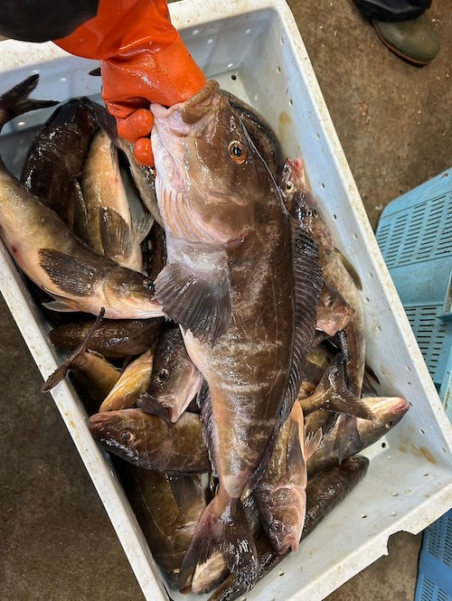

くま クマ 熊 ベアー - 2024/05/24 雨
連日雨ですね。今週水曜日に革靴を一足水没させてしまいました。雨は嫌いではないのですが、外を出歩けないので周辺のパトロールが捗らない今日このごろです。
北海道の利尻島の漁師さん宅にお世話になりながらバイトしているTSUBASAくんから、本場北海道のほっけの写真が届きました。
でっか。
テレビの報道や、SNSなどに挙がっている熊襲撃の映像を見ると、こんなんに出会ったら熊スプレーかけるひまも無さそう。時速50kmくらいで追っかけてくるらしいので、自転車で遭遇したらヤバいですね。
北海道の利尻島の漁師さん宅にお世話になりながらバイトしているTSUBASAくんから、本場北海道のほっけの写真が届きました。
でっか。

利尻島には熊が生息しておらず、生命の危険を心配することは無いのですが、離島以外の北海道、東北地方は熊被害すごいですね。テレビの報道や、SNSなどに挙がっている熊襲撃の映像を見ると、こんなんに出会ったら熊スプレーかけるひまも無さそう。時速50kmくらいで追っかけてくるらしいので、自転車で遭遇したらヤバいですね。
利尻島から南下する時にTSUBASAが熊に遭遇しないことを祈るばかりです。
YouTube動画の埋め込み
ちなみに、上記の動画埋め込みはコピペですぐできちゃいますので手順を紹介しておきます。
- Youtube動画の「共有」を選択
- 「埋め込み」を選択
- 「コピー」を選択。開始時間を指定したかったら、開始時間のチェックボックスをチェックしてからコピーを選択